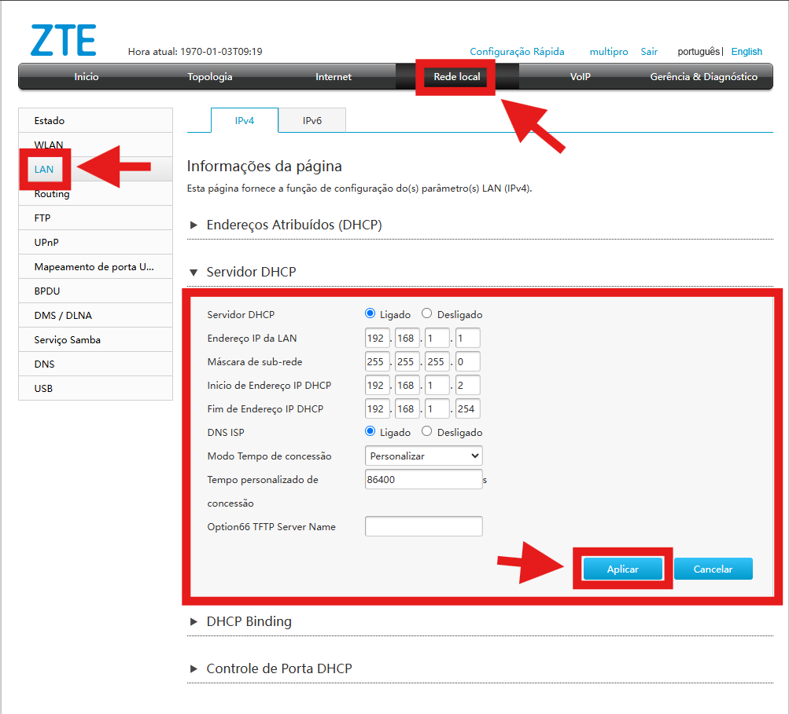
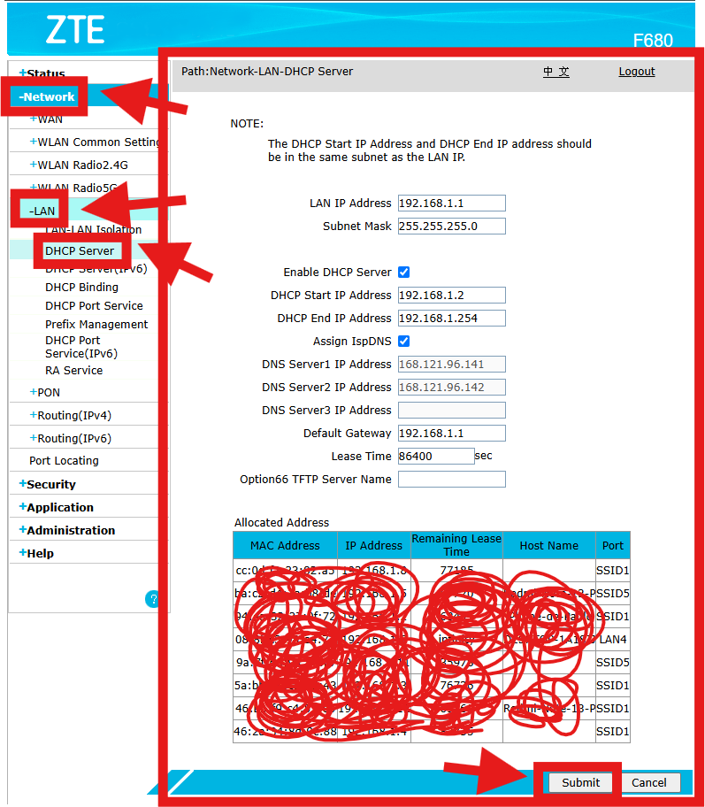

Configuração DHCP - CAT | TrixNet
Oque é DHCP ?
DHCP (Dynamic Host Configuration Protocol) é um protocolo de rede que automatiza a atribuição de endereços IP e outras configurações para dispositivos em uma rede.
Como Funciona?
Quando um dispositivo (como um computador, smartphone ou modem) se conecta a uma rede, ele envia uma solicitação para um servidor DHCP. Esse servidor responde fornecendo:
✔ Endereço IP (único para cada dispositivo na rede)
✔ Máscara de Sub-rede (define o alcance da rede local)
✔ Gateway Padrão (roteador que conecta à internet)
✔ Servidores DNS (para resolução de nomes de domínio)
Passo a passo de como configurar DHCP F6600 (Interface cinza)
1. Para acessar o DHCP na ONU da interface cinza, vá até: Rede Local > LAN > Servidor DHCP. (Veja a imagem abaixo para referência).
2. O padrão recomendado para o bom funcionamento é conforme a configuração indicada na imagem.
3. Para salvar qualquer alteração realizada no DHCP só clicar em Aplicar.
Passo a passo de como configurar DHCP F680 (Interface azul)
1. Para acessar o DHCP na ONU da interface azul, vá até: Network > LAN > DHCP Server. (Veja a imagem abaixo para referência).
2. O padrão recomendado para o bom funcionamento é conforme a configuração indicada na imagem.
3. Para salvar qualquer alteração realizada no DHCP só clicar em Submit.
⚠️ Importante
Qualquer equipamento que estiver com um endereço IP fora da faixa configurada no DHCP poderá causar conflito de rede e perda de navegação.
Exemplo de Configuração DHCP Correta:
Gateway: 192.168.1.1
Máscara de Sub-rede: 255.255.255.0
IP Inicial: 192.168.1.2
IP Final: 192.168.1.254
DNS: 192.168.1.1
Se um equipamento estiver configurado com um IP fora dessa faixa, como 192.168.2.1, ele não conseguirá se conectar à rede.